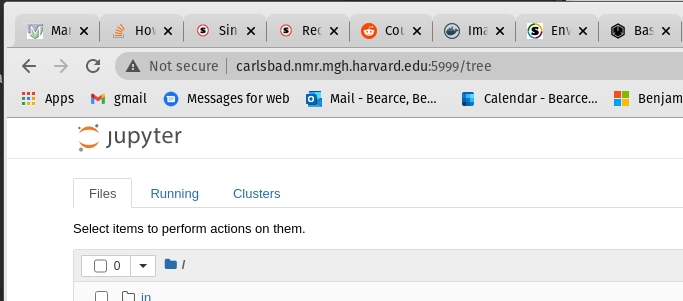
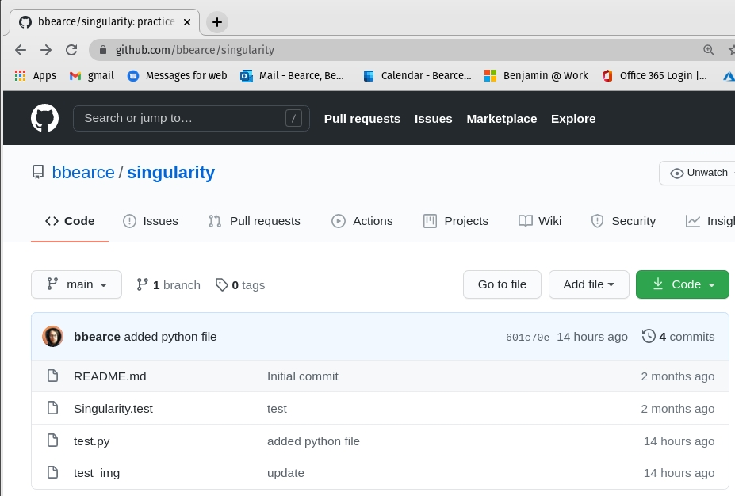
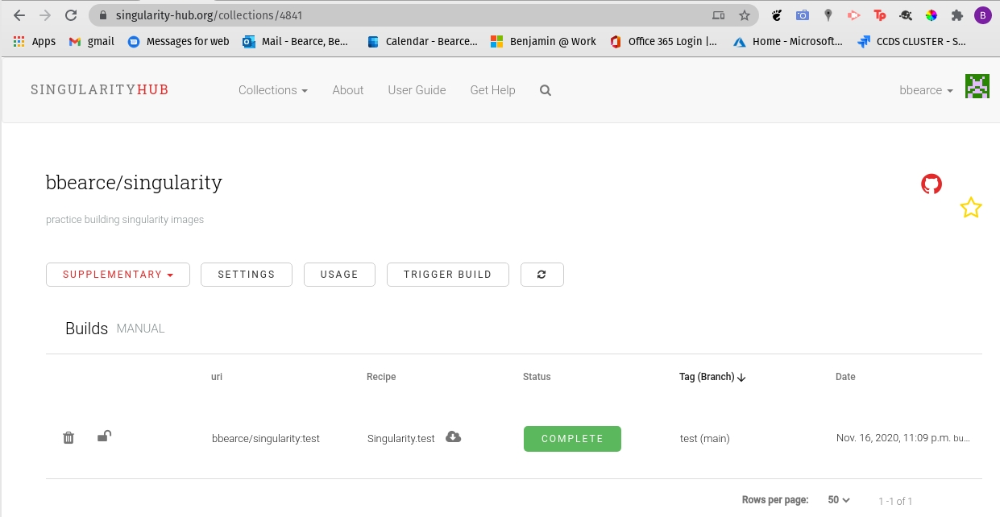
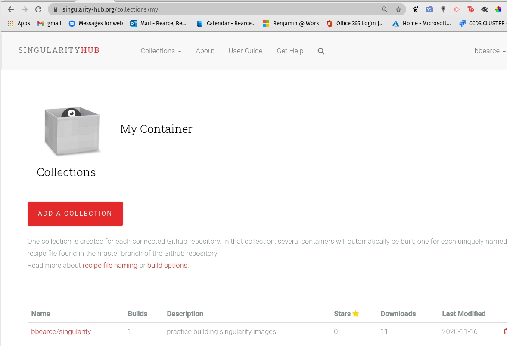
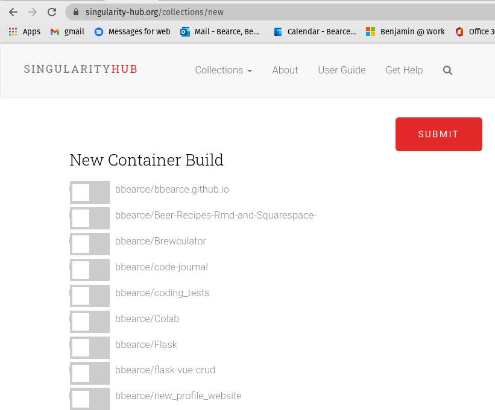

Demo Martinos Cluster
Storage
We have storage (20TB) on Martinos accessible at:
/cluster/qtim(convenient path)/vault/cluster/qtim(real path)
Here is what is there:
(base) carlsbad[0]:qtim$ cd /cluster/qtim
(base) carlsbad[0]:qtim$ ls -la
total 2
drwxrws--- 4 root qtim 5 Nov 16 14:59 .
drwxr-xr-x 4 root root 0 Nov 16 14:57 ..
-rw-r--r-- 1 root root 0 Nov 12 23:24 ID-qtim
drwxrwsr-x 4 bb927 qtim 4 Nov 16 14:59 machine_backups
drwxrwsr-x 5 bb927 qtim 5 Nov 16 14:58 users
(base) carlsbad[0]:qtim$ ls machine_backups/
bryce getafix
(base) carlsbad[0]:qtim$ ls users
bb927 kalpathy yifen
For future use and organization I think we should keep users in a
usersfolder. Other high level folders at theusersormachine_backupslevel can be created as needed, but I'm proposing some best practices as of now.
For general use we need to use this space when using machines managed by help desk (carlsbad, dotter, the new martinos GPU cluster). We have user accounts that are synced between all martinos machines and they all live on a drive managed by help desk. In order to keep space concerns down with 100s of users, they limit our space allowance to the point where it is unusable for more than configuratoin or tiny tests.
It is because of this that the most important step is to symlink some important directories to change where the data stored for various programs (docker, singularity, python) will show up ultimately (not in ~/).
Setup simlinks:
Source Martinos Docs
The two places that need symlinking are ~/.singularity and ~/.share/local/containers. Here is an example:
(make sure ~/.singularity does not already exist first)
ls -la ~
...
lrwxrwxrwx 1 bb927 bb927 33 Sep 29 12:48 .share -> /cluster/qtim/users/bb927/share
lrwxrwxrwx 1 bb927 bb927 39 Sep 29 12:44 .singularity -> /cluster/qtim/users/bb927/singularity
...
I do have some and I will delete them to demonstrate the full workflow:
(base) carlsbad[0]:bb927$ cd /cluster/qtim/users/bb927
(base) carlsbad[0]:bb927$ ls
(base) carlsbad[0]:bb927$ mkdir share singularity
(base) carlsbad[0]:bb927$ ls
share singularity
(base) carlsbad[0]:bb927$ ln -s /cluster/qtim/users/bb927/share ~/.share
(base) carlsbad[0]:bb927$ ln -s /cluster/qtim/users/bb927/singularity ~/.singularity
(base) carlsbad[0]:bb927$ mkdir ~/.singularity/tmp
(base) carlsbad[0]:bb927$ export SINGULARITY_TMPDIR=~/.singularity/tmp
(base) carlsbad[0]:bb927$ mkdir ~/.singularity/cache
(base) carlsbad[0]:bb927$ export SINGULARITY_CACHEDIR=~/.singularity/cache
Singularity
Must know
[1] Images are read-only by default...more on that later.
[2] You are not root inside your image, but rather your username on linux (Ex: bb927).
[3] Remember Singularity wants to auto --bind mount these 3 directories in the background whether you say to or not:
- /home/$USER
- /tmp
- $PWD
[4] The concept of differentiating between image and container is no more. They are one in the same...more on that later.
[5] For editable images (sandboxes) you must create your mount points ahead of time in the sandbox.
Build from Recipe
Do you need administrator privileges to use Singularity?
You generally do not need admin/sudo to use Singularity containers but you do however need admin/root access to install Singularity and for some container build functions (for example, building from a recipe, or a writable image).
The Recipe File
Bootstrap let's us know that we are using a container from dockerhub to build off of. This should be similar to the Dockerfile from docker. Most of this should be self explainatory.
Bootstrap: docker
From: ubuntu:18.04
%help
This is where you can add some useful info.
%labels
Creator Ben
%environment
export MY_VAR='~~~~~some environment variable~~~~~'
%files
test.py /
%post
apt-get -qq -y update
apt-get -qq -y install python > /dev/null
%runscript
python /test.py
test.py:
import os
if __name__ == '__main__':
print('import os module and clearly python is installed!')
print(os.environ['MY_VAR'])
Sections in recipe file:
- help: Give some help
- labels: Impart meta-data into container
- environment: Environment variables
- files: Copy files into container
- post: Run commands once container is created
- runscript: A command to run by default
Build Images from Scratch
Use this command to build the recipe file into a *.simg
(base) carlsbad[0]:bb927$ singularity build ubuntu.simg Singularity.recipe
FATAL: You must be the root user, however you can use --remote or --fakeroot to build from a Singularity recipe file
...as I said we don't have permissions. I will need this demo for later so I will show how to get it running in the long run.
Hint you can always build somewhere else first...
Build from Docker
Let's say I start with ubuntu from docker (btw you can grab images from shub:// as well):
singularity build ubuntu.simg docker://ubuntu:latest
Now let's see our image (unlike docker we won't use docker ps or docker images, rather all containers\images live where you execute commands):
(base) carlsbad[0]:bb927$ ls
share singularity ubuntu.simg
Now this is read only and can just be run or you can shell into it:
(base) carlsbad[0]:bb927$ singularity shell ubuntu.simg
Singularity> ls
share singularity ubuntu.simg
Notice that since the user's $PWD directory is automatically mounted it shows the *.simg with
ls, so don't be alarmed if your singularity directory looks just like your current directory! However we know we are in the singularity ;) (couldn't resist) because/is not the same outside the container.
Singularity> ls /
autofs boot dev etc homes lib32 libx32 mnt proc run singularity sys usr
bin cluster environment home lib lib64 media opt root sbin srv tmp var
Singularity> exit
exit
(base) carlsbad[0]:bb927$ ls /
autofs boot cmas dev etc homes lib64 lost+found misc nas opt proc run scratch srv tmp var
bin cluster data eris home lib local_mount media mnt net panfs root sbin space sys usr vast
Types of Containers
Default
You may be wondering while shelling into the container, was that the image or did we shell into an instance container?!? Neither. Singularity has one thing and is always an image, but may have writable copies created for development work. You could think of these writable versions as containers if you'd like, but that is the main paradigm shift when using this techinology.
Let's learn more with examples:
Singularity> ls
share singularity ubuntu.simg
Singularity> touch test_file.txt
Singularity> touch /test_file.txt
touch: cannot touch '/test_file.txt': Read-only file system
Notice here that you can add files to the mount point $PWD, but not /. These images are read-only by default with the exception of mount points. So how do we make editable images?
Sandbox --sandbox
So we can't edit ubuntu.simg by default, but we can build an editable version with singularity build --sandbox:
(base) carlsbad[0]:bb927$ singularity build --sandbox s_ubuntu ubuntu.simg
WARNING: 'nodev' mount option set on /autofs/cluster/qtim, it could be a source of failure during build process
INFO: Starting build...
INFO: Creating sandbox directory...
INFO: Build complete: s_ubuntu
(base) carlsbad[0]:bb927$ ls
share singularity s_ubuntu test_file.txt ubuntu.simg
Notice how we build it out of the original *.simg container we had. You can base a sandbox on shub or dockerhub images as well.
so let's see what is inside:
(base) carlsbad[0]:bb927$ ls s_ubuntu/
bin dev etc lib lib64 media opt root sbin srv tmp var
boot environment home lib32 libx32 mnt proc run singularity sys usr
An entire ubuntu os! Cool so now let's change stuff in it:
(base) carlsbad[0]:bb927$ singularity shell s_ubuntu
Singularity> touch /mnt/anything.txt
touch: cannot touch '/mnt/anything.txt': Read-only file system
So even though we made a sandbox which is desinged to be interactive, we still need the --writable flag or it will be a read only image. What is going on behind the scenes is really just the *.simg format being converted to a directory. This directory is still read only if shelled into.
Note if you don't shell into the image, it is editable from outside! This will be necessary for some mounts later as we will see.
(base) carlsbad[0]:bb927$ singularity shell --writable s_ubuntu
WARNING: Your current working directory is a symlink and may not be available in container, you should use real path with --writable when possible
WARNING: Skipping mount /etc/localtime [binds]: /etc/localtime doesn't exist in container
WARNING: By using --writable, Singularity can't create /homes destination automatically without overlay or underlay
FATAL: container creation failed: mount /var/singularity/mnt/session/homes->/homes error: while mounting /var/singularity/mnt/session/homes: destination /homes doesn't exist in container
- !!!UGH!!! What?... -
So remember that singularity wants to auto mount your home directory /home/$USER but this is a symlink in and of itself! So we need a little secret sauce for this to work. Singularity has a --no-home-- flag we can use to tell it not to mount the /home/$USER directory.
(base) carlsbad[0]:bb927$ singularity shell --writable --no-home s_ubuntu
WARNING: Your current working directory is a symlink and may not be available in container, you should use real path with --writable when possible
WARNING: Skipping mount /etc/localtime [binds]: /etc/localtime doesn't exist in container
WARNING: Skipping mount /cluster/qtim/users/bb927 [cwd]: /autofs/cluster/qtim/users/bb927 doesn't exist in container
Singularity> touch /mnt/anything.txt
Singularity> exit
exit
(base) carlsbad[0]:bb927$ ls s_ubuntu/
bin dev etc lib lib64 media opt root sbin srv tmp var
boot environment home lib32 libx32 mnt proc run singularity sys usr
(base) carlsbad[0]:bb927$ ls s_ubuntu/mnt
anything.txt
Now how do we turn it into a new image when we make changes? Just as you can build from docker images and singularity images and even singularity files, you can also build from sandboxes.
(base) carlsbad[0]:bb927$ singularity build s_ubuntu_modified s_ubuntu
WARNING: 'nodev' mount option set on /autofs/cluster/qtim, it could be a source of failure during build process
INFO: Starting build...
INFO: Creating SIF file...
INFO: Build complete: s_ubuntu_modified
(base) carlsbad[0]:bb927$ ls
share singularity s_ubuntu s_ubuntu_modified test_file.txt ubuntu.simg
Now let's see if our change made it:
(base) carlsbad[0]:bb927$ singularity shell s_ubuntu_modified
Singularity> ls /mnt/
anything.txt
Boom! So to recap, you need to build a --sandbox image from just about any image source, be it a hub or recipe file. Then shell into that container directory with flag --writable. Don't forget the --no-home flag.
So we can just install software right?
well...yes, but...
Singularity> apt update -y
Hit:1 http://security.ubuntu.com/ubuntu focal-security InRelease
...
Singularity> apt-get install vim -y;
Reading package lists... Done
Building dependency tree
Reading state information... Done
...
...
dpkg: error: requested operation requires superuser privilege
E: Sub-process /usr/bin/dpkg returned an error code (2)
Singularity>
What now?
So remeber that singulariy doesn't let you run as root but rather as your normal user? However you can't install (some) software without being root. So we need to be root without being root...
Last wonky flag I promise, but we need to be --fakeroot. Install as this user.
(base) carlsbad[0]:bb927$ singularity shell --writable --no-home --fakeroot s_ubuntu
WARNING: Your current working directory is a symlink and may not be available in container, you should use real path with --writable when possible
WARNING: Skipping mount /etc/localtime [binds]: /etc/localtime doesn't exist in container
WARNING: Skipping mount /cluster/qtim/users/bb927 [cwd]: /autofs/cluster/qtim/users/bb927 doesn't exist in container
Singularity> apt update -y; apt-get install vim -y;
Hit:1 http://security.ubuntu.com/ubuntu focal-security InRelease
...
W: chown to _apt:root of directory /var/cache/apt/archives/partial failed - SetupAPTPartialDirectory (1: Operation not permitted)
W: chown to _apt:root of directory /var/lib/apt/lists/auxfiles failed - SetupAPTPartialDirectory (1: Operation not permitted)
W: Download is performed unsandboxed as root as file '/var/cache/apt/archives/partial/libmagic-mgc_1%3a5.38-4_amd64.deb' couldn't be accessed by user '_apt'. - pkgAcquire::Run (13: Permission denied)
W: chown to root:adm of file /var/log/apt/term.log failed - OpenLog (1: Operation not permitted)
Singularity> vim
~
~
~
~
~ VIM - Vi IMproved
~
~ version 8.1.2269
~ by Bram Moolenaar et al.
...
So it works despite some rather concerning messages. Starting from ubuntu installing python worked and so did pip3, but using pip3 to install pandas failed because of a missing certificate.
I tried a python image and stil lcouldn't install pandas, though I didn'tspend much time on it. Flask did work...We might have to practice a bit with this or only use fully formed images on this system.
Run
Use singularity run like docker:
This image is the demo from earlier using the
Singularity.reciperecipe file andtest.py.
(base) carlsbad[0]:bb927$ singularity run shub://bbearce/singularity:test
INFO: Downloading shub image
58.24 MiB / 58.24 MiB [=========================================================================================] 100.00% 16.88 MiB/s 3s
import os module and clearly python is installed!
~~~~~some environment variable~~~~~
So it ran and printed some stuff. Cool, but we really care about interactive mode.
At the end I will discuss uploading images to shub and bulding from github repos.
Useful flags
Here are some of the flags we will need routinely:
-B or --bind
Note mounts can be specified as read only
roor read writerw(default).
This is equivalent to dockers -v flag. Use this to mount directories:
(base) carlsbad[0]:bb927$ pwd
/cluster/qtim/users/bb927
(base) carlsbad[0]:bb927$ mkdir in
(base) carlsbad[0]:bb927$ mkdir out
(base) carlsbad[0]:bb927$ singularity shell -B ./in:/mnt/in -B ./out:/mnt/out s_ubuntu/
Singularity> ls /mnt/in
Singularity> ls /mnt/out
Singularity> touch /mnt/out/anything.txt
Singularity> exit
exit
(base) carlsbad[0]:bb927$ ls out
anything.txt
Singularity>
you can comma delimit multiple mounts:
(base) carlsbad[0]:bb927$ singularity shell -B ./in:/mnt/in,./out:/mnt/out s_ubuntu/
Singularity> ls /mnt/out
anything.txt
Singularity>
If you do not specify where in the container you mount to, the local mount will be mounted to the same directory inside the container:
(base) carlsbad[0]:bb927$ singularity shell -B /opt s_ubuntu/
Singularity> ls /opt
containerd google microsoft rh
Singularity> exit
exit
(base) carlsbad[0]:bb927$ ls /opt
containerd google microsoft rh
This is the same as
-B /opt:/opt
--fakeroot
This is important for interactive development because since you are not "root" normally you can't install stuff with apt-get. With this you can.
--net
Gives you internet access.
--nv
Give container access to GPUs
(base) carlsbad[0]:bb927$ singularity shell --nv pytorch.simg
--no-home
When shelling into your container image, Singularity allows you to mount your current working directory (CWD) without mounting your host $HOME directory with the --no-home flag.
Jupyter Example
Source ljvmiranda921
Also a note from Help Desk:
Note from Martinos help Desk: If you run jupyter, you will not be able to access the port it is on (
8888) remotely (such as your local machine at home over VPN) due to firewall on dotter. But port range5900-5999are open for VNC so if you force jupyter to use port5999instead of its default you can use that.
[1] Forward via ssh in your local machine
bbearce@pop-os:~$ ssh -N -f -L localhost:5999:localhost:5999 bb927@carlsbad.nmr.mgh.harvard.edu
[2] Run jupyter notebook from remote machine
(base) carlsbad[0]:bb927$ singularity shell --nv datascience-notebook_latest.sif
Singularity> jupyter notebook --no-browser --port=5999
Fail to get yarn configuration. {"type":"warning","data":"Skipping preferred cache folder \"/home/jovyan/.cache/yarn\" because it is not writable."}
{"type":"warning","data":"Skipping preferred cache folder \"/home/scratch/.yarn-cache-4643095\" because it is not writable."}
{"type":"warning","data":"Skipping preferred cache folder \"/home/scratch/.yarn-cache\" because it is not writable."}
{"type":"error","data":"Yarn hasn't been able to find a cache folder it can use. Please use the explicit --cache-folder option to tell it what location to use, or make one of the preferred locations writable."}
{"type":"info","data":"Visit https://yarnpkg.com/en/docs/cli/config for documentation about this command."}
[I 13:48:17.304 NotebookApp] JupyterLab extension loaded from /opt/conda/lib/python3.8/site-packages/jupyterlab
[I 13:48:17.304 NotebookApp] JupyterLab application directory is /opt/conda/share/jupyter/lab
[I 13:48:17.312 NotebookApp] Serving notebooks from local directory: /autofs/cluster/qtim/users/bb927
[I 13:48:17.312 NotebookApp] Jupyter Notebook 6.1.4 is running at:
[I 13:48:17.312 NotebookApp] http://carlsbad.nmr.mgh.harvard.edu:5999/?token=26d3e282bf9f134c9059eac068d10a76d624754182d36a55
[I 13:48:17.312 NotebookApp] or http://127.0.0.1:5999/?token=26d3e282bf9f134c9059eac068d10a76d624754182d36a55
[I 13:48:17.312 NotebookApp] Use Control-C to stop this server and shut down all kernels (twice to skip confirmation).
[C 13:48:17.323 NotebookApp]
To access the notebook, open this file in a browser:
file:///homes/3/bb927/.local/share/jupyter/runtime/nbserver-25344-open.html
Or copy and paste one of these URLs:
http://carlsbad.nmr.mgh.harvard.edu:5999/?token=26d3e282bf9f134c9059eac068d10a76d624754182d36a55
or http://127.0.0.1:5999/?token=26d3e282bf9f134c9059eac068d10a76d624754182d36a55
Go here: http://carlsbad.nmr.mgh.harvard.edu:5999/?token=26d3e282bf9f134c9059eac068d10a76d624754182d36a55 and you should see this:

shub
Link to shub is: https://singularity-hub.org/
Recapping on our previous example, let's say you want to build from a recipe file:
Singularity.test:
Bootstrap: docker
From: ubuntu:18.04
%help
This is where you can add some useful info.
%labels
Creator Ben
%environment
export MY_VAR='~~~~~some environment variable~~~~~'
%files
test.py /
%post
apt-get -qq -y update
apt-get -qq -y install python > /dev/null
%runscript
python /test.py
test.py:
import os
if __name__ == '__main__':
print('import os module and clearly python is installed!')
print(os.environ['MY_VAR'])
Build:
Had to do this on my local
bbearce@pop-os:~/Documents/singularity$ ls
README.md Singularity.test test.py
bbearce@pop-os:~/Documents/singularity$ sudo singularity build test.simg Singularity.test
[sudo] password for bbearce:
INFO: Starting build...
Getting image source signatures
Copying blob 171857c49d0f skipped: already exists
Copying blob 419640447d26 skipped: already exists
Copying blob 61e52f862619 [--------------------------------------] 0.0b / 0.0b
Copying config 33a51d0908 done
Writing manifest to image destination
Storing signatures
2020/11/17 13:40:36 info unpack layer: sha256:171857c49d0f5e2ebf623e6cb36a8bcad585ed0c2aa99c87a055df034c1e5848
2020/11/17 13:40:37 info unpack layer: sha256:419640447d267f068d2f84a093cb13a56ce77e130877f5b8bdb4294f4a90a84f
2020/11/17 13:40:37 info unpack layer: sha256:61e52f862619ab016d3bcfbd78e5c7aaaa1989b4c295e6dbcacddd2d7b93e1f5
INFO: Copying test.py to /tmp/build-temp-907729936/rootfs/
INFO: Running post scriptlet
+ apt-get -qq -y update
+ apt-get -qq -y install python
debconf: delaying package configuration, since apt-utils is not installed
INFO: Adding help info
INFO: Adding labels
INFO: Adding environment to container
INFO: Adding runscript
INFO: Creating SIF file...
INFO: Build complete: test.simg
bbearce@pop-os:~/Documents/singularity$ ls
README.md Singularity.test test.py test.simg
then run:
bbearce@pop-os:~/Documents/singularity$ singularity run test.simg
import os module and clearly python is installed!
~~~~~some environment variable~~~~~
So shub allows you to link github repos and put code and recipe files there for auto build:

which will become this on sub:

Add images via github:
[1] 
[2] 